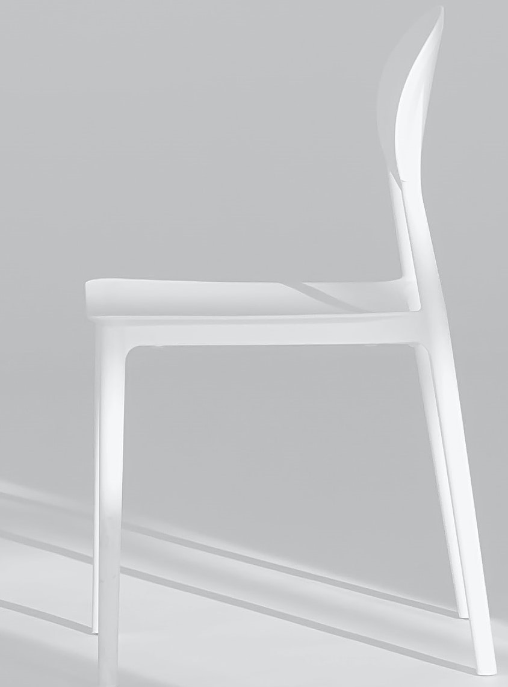

Web design responsivo é criar páginas da Web com boa aparência em todos os dispositivos!
Um web design responsivo se ajustará automaticamente para diferentes tamanhos de tela e viewports.
Imagens responsivas são imagens que se adaptam bem a qualquer tamanho de navegador.
Se a propriedade CSS width estiver definida como 100%, a imagem será responsiva e dimensionada para cima e para baixo:

Se a max-width propriedade estiver definida como 100%, a imagem será reduzida se necessário, mas nunca será ampliada para ficar maior que o tamanho original:
O elemento HTML -picture- permite definir diferentes imagens para diferentes tamanhos de janela do navegador. Redimensione a janela do navegador para ver como a imagem abaixo muda dependendo da largura: